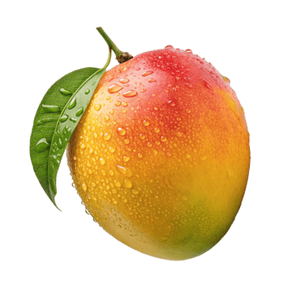

You'll get a random quote, and you'll have to decide whether it comes from a colombian politician (like Jota Pe Hernández or Abelardo de la Espriella), or a reggaeton (popular music genre in Colombia, and all Latin America) artist, like Karol G or Ferxxo.
